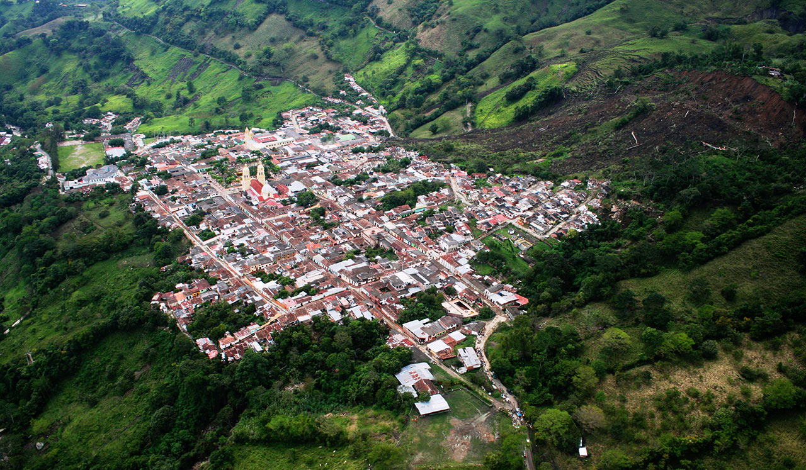

Gramalote: a city rebuilt
In December 2010, in northeastern Colombia, the city of Gramalote was swallowed by a gigantic landslide. Triggered by the weather phenomenon La Niña (which is the cooling of the surface waters of the Pacific, with severe weather consequences), a mud mass buried thousand of homes, transforming the lives of 6000 people. Heavy rains had dislodged thousands of Colombians in other regions of the country in that period.
After the incident in Gramalote, the local government decided to form a multidisciplinary team to understand the events and guide the 19th century village’s reconstruction. Geologists, urbanists, eco-hydrologists and conservationists got together and discovered that the village had been built on a fault line at the confluence of rivers and streams. During the extreme rainfall, the moist soil was shaken by an earthquake and collapsed.
Since then, the reconstruction of Gramalote on another site in the same region is discussed. “We finished the analysis at the end of 2013,” reports the Colombian Leonardo Sáenz, eco-hydrologist from Conservation International and phD in water resource management at King’s College London. “Gramalote is being rebuilt right now and will be ready in 2016.”
The team of experts worked together to define a location more sustainable and resilient to weather. “Natural disasters”, says Leonardo Sáenz, “such as floods and landslides, are being exacerbated by climate change. Intact ecosystems can make a difference in mitigating these events.” Co$ting Nature was determinant in defining the new location’s infrastructure: roads and urban services are being built with low impact on key areas for water supply, carbon sequestration and shelter for animal species – “the ecosystem’s healthy building blocks”, points Sáenz.
The Gramalote case may be the first in the world where a city is planned entirely from natural capital criteria, with the technological support of tools such as Co$sting Nature (other systems were used to supplement the analysis). At the end of the work, researchers ensured the new Gramalote location’s with low risk of landslides; surrounded by natural areas that provide a continuous supply of clean water and the mitigation of natural disasters; as well as tourism opportunities.
In its new boundary, Gramalote can “thrive precisely because its interaction with nature, rather than be threatened by it,” emphasizes Sáenz. Another benefit is to facilitate government efforts to create mechanisms to ensure the conservation of natural areas – benefits that go far beyond the boundaries of the Colombian town. “What we did in Gramalote can be replicated in any other tropical stronghold,” concludes the researcher.
The tools for a new world are available. Is there anyone interested?
